BMS運送
クライアント: BMS運送／媒体: 採用サイト / SNS
初版の反響を踏まえ、よりターゲットに刺さるストーリーラインにリニューアル。キャラクターデザインも一新。
「リメイク版は初版以上の反響で、スカウト返信率も向上しました。」この事例を詳しく見る →

条件では伝わらない働く人の魅力を、
求職者が思わず読み進む採用マンガ・採用漫画にします。採用効率化にも直結します。
採用シーンのあらゆる接点に展開可能。
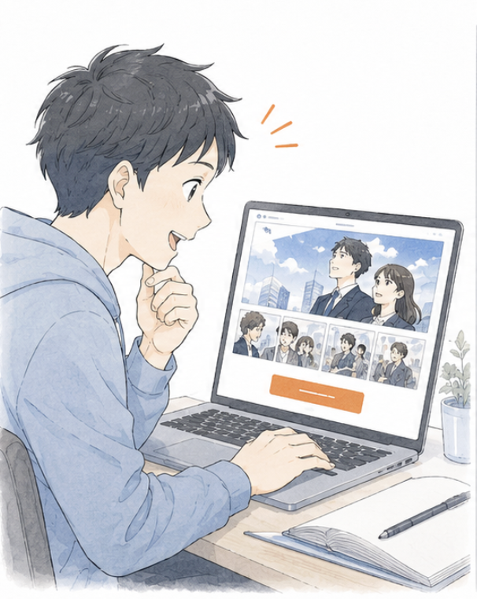
応募意欲を引き上げる
採用サイトのトップに「入社1年目の1日」「現場のリアル」を採用漫画（採用マンガ）として配置すると、求職者が思わずスクロールを止めます。エントリーフォームへの到達率が改善し、応募の質も高まる傾向があります。
テキスト主体のメッセージを「物語」として体験できるため、エントリー前にカルチャーフィットの判断ができ、ミスマッチによる早期離職の予防にも繋がります。
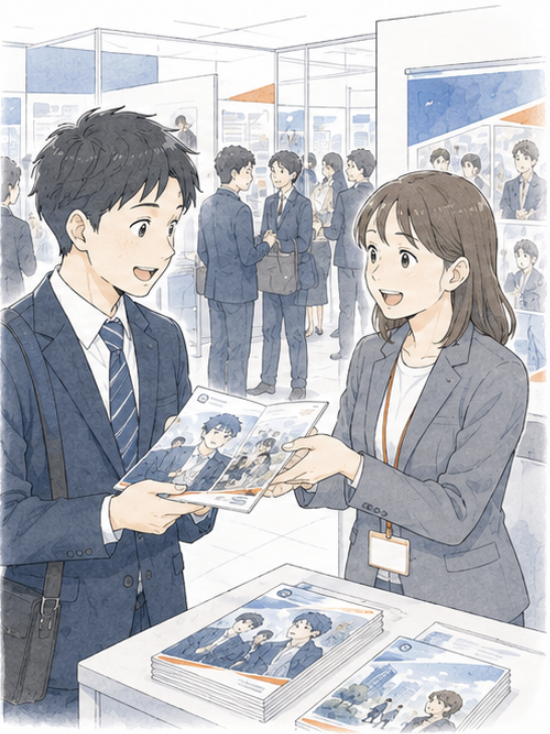
説明会・合説で配布する
合同企業説明会では「持ち帰ってもらう」ハードルが極めて高いのが現実です。漫画表紙のパンフレットは、ブースで手に取られる確率が大幅に上がり、家に持ち帰って家族と読まれる確率も高くなります。
選考が長引く新卒採用では、求職者本人だけでなく保護者・パートナーへの説明資料としても機能するため、最終内定承諾の段階で大きな後押しになります。
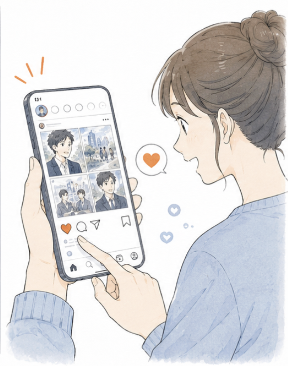
Z世代に直接届ける
Z世代の求職者の多くが、企業名で検索する前にSNSで「中の人の雰囲気」を確認しています。漫画形式の投稿は、他社の文字主体の投稿と差別化できるだけでなく、保存・共有されやすく、自然な口コミ拡散に繋がります。
1本の採用マンガから、Instagram用のカルーセル、X用の1コマ抜粋、TikTok用の縦型動画など、複数のSNS素材を派生制作できるため、毎月のクリエイティブ供給コストも抑えられます。
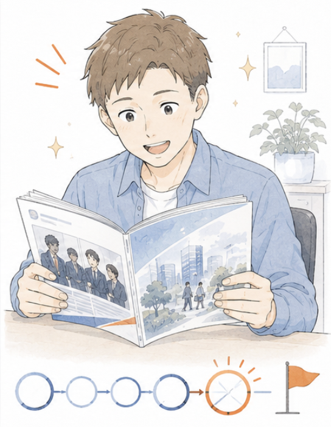
内定辞退を防ぐ
内定承諾から入社までの数ヶ月は、内定者の不安が一番高まる期間です。先輩社員のリアルな1日や成長エピソードを漫画で届けることで、入社後のイメージを具体化でき、内定辞退率の低減に貢献します。
入社後の新人研修・配属教育にも転用できるため、採用→オンボーディングを一貫した世界観で設計できます。
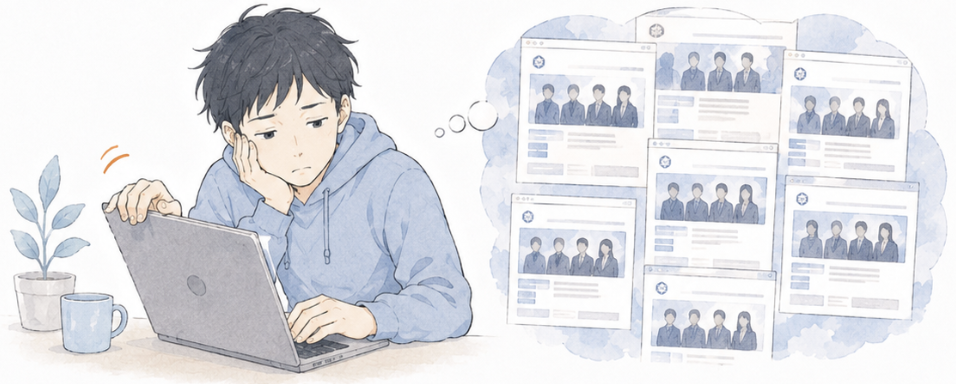
採用サイトに想いを書いても、求職者に伝わらない。
「風通しの良さ」「成長できる環境」「挑戦を歓迎する文化」。どんなに丁寧に書いても、求職者には他社と同じに見えてしまう。応募者の質と量が伸び悩んでいる。
採用サイトの「メッセージ」「カルチャー」ページは、ほぼすべての企業が同じキーワード（風通し・成長・挑戦・チームワーク）で構成されています。求職者は1日に何十社もの採用サイトを見るため、文字主体のメッセージは差別化要素としてほとんど機能しません。
採用マンガでは、社員の1日・チームの会話・挫折と成長のエピソードを物語として描くため、抽象的な「文化」が具体的な「シーン」に変わります。求職者は登場人物の感情を通じて職場を疑似体験でき、「ここで働きたい」という志望動機が言語化されやすくなります。
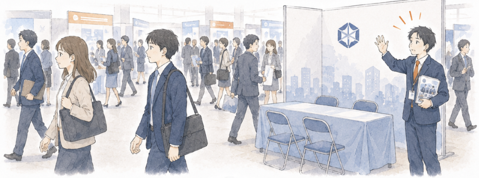
合同企業説明会で、ブースに人が立ち寄らない。
同じレイアウト・同じパンフレット・同じ呼び込み。何百ブースの中で、求職者の足を止める「目を引くもの」が必要だが、毎年予算とアイデアが尽きていく。
合同企業説明会では、求職者は会場全体を平均30〜40分で1周すると言われます。1ブースあたりの注視時間は数秒以下。文字情報主体のパンフレット表紙は、その「数秒」を獲得できません。
漫画表紙の採用パンフレットは、視覚的な差別化が圧倒的です。実際に導入した企業では、ブース立ち寄り数が前年比1.5〜2倍、配布パンフレットの「持ち帰り率」も大幅に向上しています。説明会の場で記憶に残るため、後日のエントリーにも繋がります。
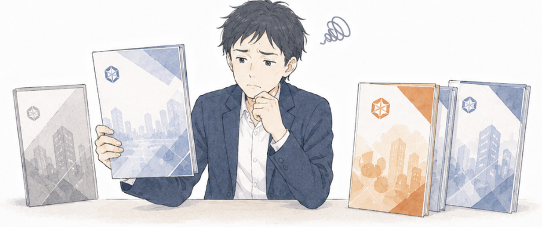
内定を出しても、承諾されず辞退される。
面接ではお互い手応えを感じたのに、内定後の競合比較で他社に流れる。採用コストをかけて選考を進めたのに、最終局面で辞退され続けている。
内定辞退の理由の多くは「もっと魅力的に見える他社があった」「家族の反対」「入社後のイメージが具体的に湧かなかった」の3つに集約されます。採用担当が伝えきれなかった情報を、内定後にどう補えるかが勝負どころです。
採用マンガを内定者フォローツールとして活用すれば、先輩社員の入社後の成長・配属後の1日・実際のキャリアパスを「物語」として届けられます。本人だけでなく家族にも見せられるため、家族説得力という最後の壁も突破しやすくなります。
その悩みは、
「採用マンガ」で解決できます。
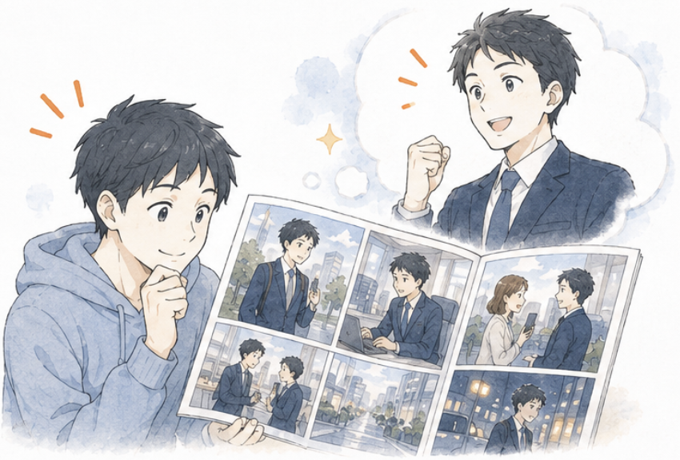
「先輩社員の1日」「初めての配属」「初めての成功体験」。求職者は登場人物に自分を重ねて、入社後の自分を具体的にイメージできます。
「カルチャー」「成長環境」といった抽象語は、どの会社のサイトにも書いてあり、求職者の意思決定にほぼ影響しません。求職者が本当に知りたいのは「入社1年目の自分は、どんな表情で働いているのか」という具体的な未来像です。
採用マンガでは、登場人物として描かれた先輩社員の体験を通じて、求職者が「自分の3年後」を視覚的にシミュレーションできます。志望動機の解像度が上がるため、エントリー時のミスマッチが減り、選考途中の辞退率も下がる傾向があります。
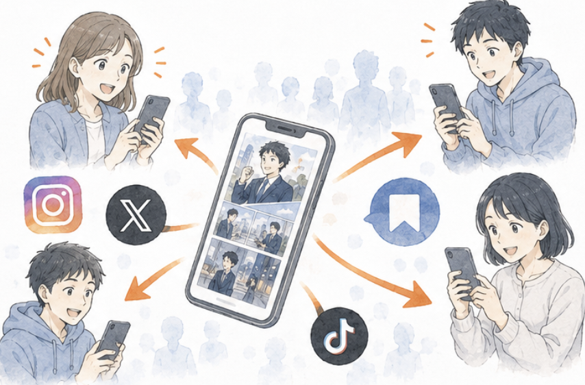
漫画形式の投稿は「保存」「シェア」されやすく、求人広告枠を買わなくても認知が広がります。Z世代の求職者にも届きやすい形式です。
Z世代の求職者は「企業の公式メッセージ」より「実際に働いている人の日常」を信頼する傾向が顕著です。漫画形式の投稿は、テキスト主体の採用情報より圧倒的に保存・シェアされやすく、無償の口コミ拡散を生み出します。
1本の採用マンガから、Instagram投稿・X投稿・TikTok縦型動画・LinkedIn記事など、複数のSNSフォーマットに派生展開可能です。広告費を増やさずに認知拡大が実現できる点が、採用マンガの大きな経済的メリットです。
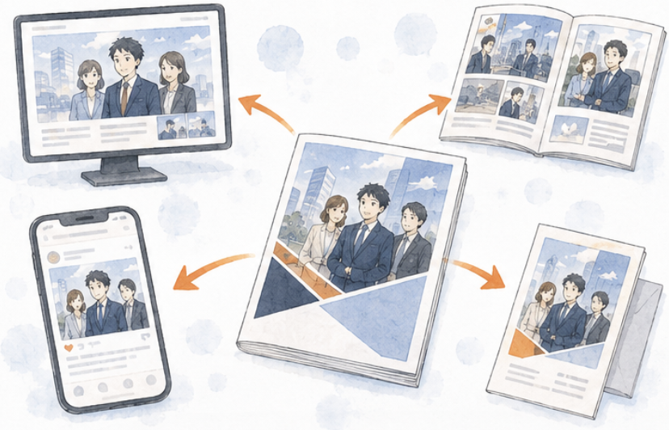
1本のマンガを、サイト・パンフレット・SNS・内定者フォローまで派生展開。採用部門の予算とリソースを最大限活かせます。
採用活動では、Webサイト・パンフレット・説明会資料・SNS・内定者フォローと、複数の媒体で同じメッセージを伝える必要があります。これまでは媒体ごとに別の制作物を作ることが多く、コストとブランド一貫性の両立が難しい状況でした。
採用マンガは、1本制作すれば全媒体に派生展開可能な「資産」になります。年間ベースで見ると、1媒体ごとに制作するケースよりも採用クリエイティブ単価が大幅に下がり、かつブランドの世界観を媒体間で統一できます。
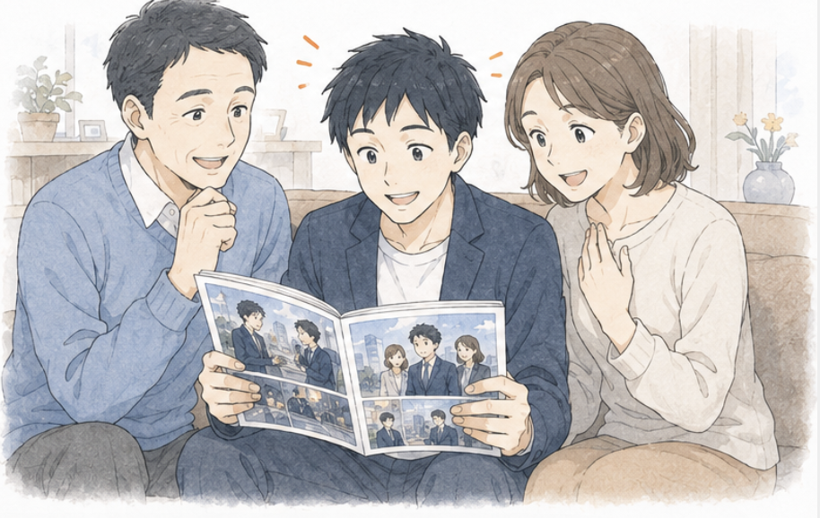
新卒採用では、内定承諾の最終決定に家族の意見が大きく影響します。漫画形式は世代を問わず読みやすく、家族説得の援護射撃になります。
新卒採用の内定辞退理由として「親の反対」「家族の不安」が上位を占める時代が続いています。求職者本人がいくら惚れ込んだ会社でも、家族が「聞いたことのない会社」と判断すると、最終局面で内定辞退に至るケースが少なくありません。
採用マンガは、保護者世代にも違和感なく読まれるフォーマットです。求職者本人が家族に「この会社、こういう感じ」と渡せる「会話のきっかけ」として機能するため、家族の不安を解消し、内定承諾に向けた最後の後押しになります。
採用マンガとして実際に納品した事例から、抜粋してご紹介します。
クライアント: BMS運送／媒体: 採用サイト / SNS
初版の反響を踏まえ、よりターゲットに刺さるストーリーラインにリニューアル。キャラクターデザインも一新。
「リメイク版は初版以上の反響で、スカウト返信率も向上しました。」この事例を詳しく見る →

クライアント: トルトルくん／媒体: 採用ツール / Web掲載
定額制採用代行・RPOサービス「トルトルくん」の魅力を漫画で訴求。月10万円から採用を再起動できる手軽さをストーリーで伝達。
「漫画にしたことでサービスの分かりやすさが格段に上がり、問い合わせ数が増加しました。」この事例を詳しく見る →
クライアント企業向けに制作した採用マンガを、ビズ書庫から抜粋して掲載しています。タップ／クリックすると、全画面のビューアで作品を読めます。
読み込み中…
ヒアリングから納品まで、8つのステップで進行します。各ステップをクリックすると、左の編集者ノートに参考画像と詳しい解説が表示されます。
お問い合わせ前に解消しておきたい疑問を、編集担当目線でまとめました。ここに無いご質問はお気軽にお問い合わせください。
企画から作画、納品まで、専任の編集担当が伴走します。30分の無料相談で、貴社の採用課題に最適な構成・ページ数・予算感をご提案いたします。発注義務はありません。新卒・中途・アルバイトいずれも対応可能です。